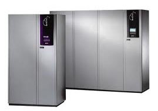

Кондиционер в серверную
|
С каждым годом растут требования к организации систем кондиционирования специальных помещений. К таким помещениям относятся:серверные, компьютерные залы, центры передачи и обработки электронной информации, телефонные узлы связи, медицинские и фармацевтические помещения, исследовательские лаборатории и т. д.
|
 |
Прецизионные кондиционеры предназначены для точного поддержания заданных параметров температуры, влажности и подвижности воздуха за счет специальных устройств во внутреннем и внешнем блоках. Так, работоспособность кондиционера в диапазоне температур от - 30°С до + 45°С становится возможной благодаря трехходовому клапану в конденсаторном блоке и контролю давления конденсации. А требуемую влажность воздуха обеспечивает за счёт пароувражнителя, производительность которого подбирается в зависимости от заданных требований.
При необходимости можно поставить резервные кондиционеры. Очередность работы оборудования обеспечивается настройкой контроллера. При увеличении температуры в помещении выше заданной, резервный кондиционер включается автоматически. Можно выбрать и режим попеременного включения кондиционеров, который обусловливает более равномерный износ основного оборудования.
Прецизионные кондиционеры можно интегрировать в общую систему диспетчеризации, но для этого придется закупить дополнительное аппаратное и программное обеспечение. Существует два основных недостатка системы кондиционирования на базе прецизионных кондиционеров. Это большие габариты внутреннего блока кондиционера - 600 х 600 х 1900 мм) и высокая стоимость данного оборудования.
Более приемлемый способ кондиционирования специальных помещений является использование сплит-систем. Сплит-системы применяются для достаточно точного поддержания температуры воздуха внутри помещений при отсутствии жестких требований по влажности воздуха, обеспечивая значения влажности не выше 60-80%.
Без доработки, большинство моделей кондиционеров можно эксплуатировать в температурном диапазоне от минус 5 до плюс 45°С, что не в полной мере соответствует климатическим условиям России. Возникает множество проблем, связанных с эксплуатацией систем кондиционирования в диапазоне пониженных температур до минус 30°С. Так, во время пуска, при попадании жидкого хладагента в картер компрессора может произойти гидравлический удар и выброс в систему масла из картера. Работа кондиционера в таком режиме будет сопровождаться обмерзанием внутреннего блока, что препятствует отводу конденсата через дренажную систему, или выход из строя компрессора.
Как же обеспечить круглогодичное функционирование наружного блока кондиционера?
Заметим, что работа кондиционера в режиме «обогрев» при отрицательных температурах наружного воздуха неэффективна. Поэтому лучше использовать этот режим только в паспортных температурных границах конкретного кондиционера. Главное требование для специальных помещений, обеспечить гарантированное охлаждение при температуре наружного воздуха до -30°С. Решается эта проблема двумя путями. Первый, это обогрев картера компрессора для улучшения вязкости масла и устранения эффекта «вскипания» хладагента при пуске. Второй, уменьшение потока воздуха через теплообменник наружного блока кондиционера, для стабилизации давления конденсации в системе.
Обогрев картера кондиционера обеспечивается установкой бандажного нагревателя. А вот с соподчинением величин рабочих давлений всасывания и нагнетания с изменением воздушного потока через конденсатор. То есть со скоростью вращения вентилятора наружного блока, возникают проблемы. Снижение скорости вентилятора наружного блока кондиционера, это уменьшение напряжения на его обмотках. В идеале, от текущего напряжения питающей сети до нуля. Однако снижение напряжения на обмотках вентилятора ниже 100-110 V, то есть до 20…25 % мощности, может привести к выходу его из строя из-за увеличения активной составляющей сопротивления нагрузки. Да и вентилятор при этом становится "слабым". Даже не самый сильный ветер его остановит или заставит вращаться в противоположном направлении. Для решения проблемы необходима установка качественного регулятора, поддерживающего требуемое давление на линии нагнетания.
К тому же, если отвод дренажа от внутреннего блока кондиционера осуществляется на улицу или в холодное помещение, то для исключения промерзания необходимо установить дренажный нагреватель. Он представляет собой греющий провод, активизирующийся при подаче напряжения на наружный блок сплит-системы. Систему из регулятора скорости вращения вентилятора наружного блока по давлению фреона, бандажного нагревателя и обогревателя дренажа, обеспечивающую круглогодичную работу кондиционера, называют низкотемпературным комплектом.
С особенной тщательностью нужно подойти к выбору регулятора скорости вращения вентилятора. Эти приборы не универсальны, могут использоваться не со всеми моделями кондиционеров. А в случае поломки некачественные устройства могут привести к заклиниванию компрессора сплит-системы. Предпочтение стоит отдавать регуляторам с широтно-импульсной модуляцией. Данные регуляторы позволяют снижать мощность вентилятора до минимальных значений - 1-2% от номинальной, а также уверенно преодолевать ветровые нагрузки. Амплитудное же преобразование не позволяет снижать мощность вентилятора ниже 20…25 % от номинальной.
Как правило, в серверных помещениях применяется стопроцентное резервирование мощности кондиционирования. Это означает установку двух кондиционеров, каждый из которых способен полностью обеспечить помещение холодом в любое время года. При пятидесятипроцентном резервировании устанавливаются три агрегата мощностью, равной половине необходимой. Два из них работают одновременно, третий - резервный. При любом типе резервирования в целях достижения равномерного износа и обеспечения технического обслуживания кондиционерного оборудования необходимо осуществлять ротацию работающих агрегатов. Эти функции выполняют модули управления кондиционерами или блоки ротации. Их предназначение:
Применение модулей управления кондиционерами в помещениях серверных повышает эффективность и надежность системы кондиционирования, продлевает срок ее службы, решает проблемы, связанные с контролем работоспособности оборудования. При этом затраты на установку весьма незначительны.
Подводя итог, можно сказать, что после соответствующей доработки, качественные сплит-системы, оснащенные грамотной системой автоматики, способны в полной мере выполнять функции прецизионного контроля температурно-влажностных параметров в помещении серверной.